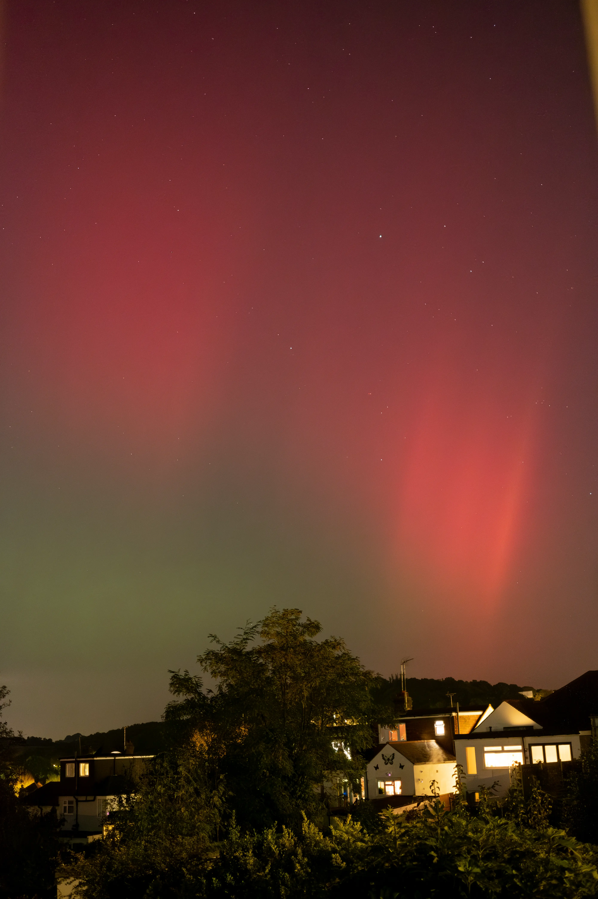
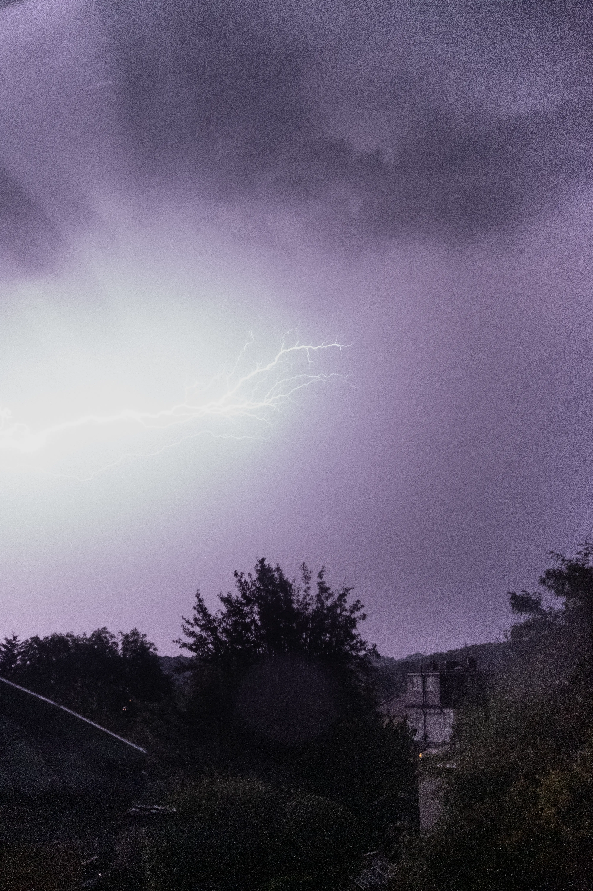

things in the sky
Getting up at 3am is rarely rewarding, but when armed with a camera and finding out what you captured the next morning, it's pretty exciting


stars
this was with a LOT of light pollution.
